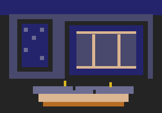
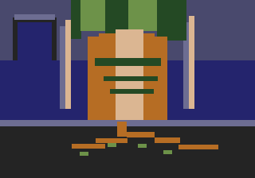

Ser Aldric Vane
Last Heir of Hollow Abbey
He inherits the chain, and calls its breaking an injury to the world.
ESTATE OF THE CROWN · AGED
Three claims upon the old order. Three answers to the question of what should govern the living.
The page begins with three figures, not fixed portraits. Their supplied offices and beliefs are established; their physical appearance remains open until a character description is added to the canon.
The portraits are symbolic placeholders. Their physical descriptions have not yet been supplied; the silhouettes must be replaced when those details are established.
Last Heir of Hollow Abbey
He inherits the chain, and calls its breaking an injury to the world.
ESTATE OF THE CROWN · AGEDOf the Oak Synod
She remembers what the land has borne, and distrusts every claim to own it.
ROOTBOUND · THE LAST ABBEYThe Chainbreaker Auditor
He breaks the old chain in public, then measures a colder cage in private.
THE BROKEN MEASURE
Aldric carries the reliquary chain as an inheritance that cannot be reduced to metal. Its links once belonged to a sacred trust; now the chain is broken, and he believes that logic did the breaking. He does not speak of the fracture as an inconvenience. To him it is an accusation: that a world which measures every bond will eventually mistake the bond itself for a defect.
His instinct is to defend the order that gave the chain meaning. Landed duty, inherited place, and divine right are not merely privileges in his account; they are the obligations by which the living answer to the dead and the powerful answer to those placed under their care. Yet the same conviction can harden into a shield. Aldric's conflict is not whether hierarchy should exist, but whether an inherited hierarchy can make room for mercy without denying its own foundations.
The chain is therefore both relic and test. If he guards it only as proof of his claim, he preserves its shape and loses its purpose. If he can understand inheritance as responsibility rather than possession, the broken links may become more than evidence of an enemy.

Ysolde guards the ancient oak, but her guardianship is not the possession of a landmark. She reads root-script and remembers land-memory: the traces left in soil, stone, and living wood by generations that have passed across them. What others call an empty plot or an obsolete boundary may, to her, still be thick with obligations that no surviving ledger records.
She opposes cold rationalism because it mistakes what can be counted for all that is real. But she offers no easy refuge to Aldric's kind of certainty. The old families can become as deaf as the administrators when they confuse stewardship with ownership and inheritance with exemption. The Oak Synod's authority is measured by what it keeps alive, not by the height of its seat or the age of its title.
Ysolde stands against two forms of arrogance: the reformer who believes the past can be cleared away, and the heir who believes the past belongs to him. The roots remember both. Her task is to make that memory speak before either side mistakes silence for consent.
Merrow is the rationalist administrator and the foil to Aldric and Ysolde. He uses the broken chain as an emblem of liberation: a clear image, easy to understand, easy to display. Yet the symbol conceals a contradiction. He has not abolished hierarchy. He has replaced the old bonds with a system in which authority is colder, more distant, and less answerable to the people it orders.
His reforms promise that no inherited claim should escape examination. Every relation can be entered, every obligation assessed, every boundary redrawn. But a hierarchy does not cease to be a hierarchy because its ranks are assigned by procedure. The chain has been broken as an image while its logic has been rebuilt as an iron cage.
Merrow's danger lies in the clean appearance of his argument. He can point to a severed link and call it freedom while the new enclosure grows around the whole estate. His conflict with Aldric and Ysolde is not simply old against new. It is a contest over whether order must remain answerable to memory, mercy, and the particular lives it governs.
Select a heraldic tab to read the working account. These entries establish a narrative spine, not dated history.
Hollow Abbey begins as a house set apart for memory and obligation. Its stones are not a monument to a single family's greatness; they mark a place where the living are expected to keep faith with what came before them. The oak stands older than the walls, and the first rule of the place is that neither stone nor title can claim to have made the land.
The estate is granted into hereditary keeping. Its authority is framed as a charge as much as a right: land must be tended, the house maintained, and the wider community held within a durable order. The grant becomes the foundation of Aldric's inheritance, but it also sets the question that will trouble him: whether the heir serves the trust, or the trust serves the heir.
Reformers take the broken chain as their sign. They describe inherited obligations as restraints and present severance as proof of freedom. The old order sees the act differently: a bond has been cut before anyone has accounted for what it held together. The dispute begins to turn on the meaning of the chain itself.
The guardians of the oak make the land's memory part of the dispute. Through root-script and land-memory, Ysolde gives voice to continuities that neither an estate charter nor an auditor's register can fully contain. The Synod refuses both the rationalist's clean slate and the heir's claim that inherited authority is beyond correction.
Merrow's administration takes the language of liberation and gives it a new architecture. Procedure replaces inherited discretion; the broken chain becomes an official emblem. Yet the new order concentrates authority in the hand that measures and records. What was advertised as the end of hierarchy becomes a hierarchy with fewer visible bonds and fewer places to appeal.
The estate still stands. One wing is neglected, the old foundations are under pressure, and the storm has reached the pediment. Aldric holds the reliquary chain; Ysolde guards the oak's memory; Merrow's reforms press upon the house from within. The outcome remains unwritten. The question is no longer whether the old order can remain untouched, but what it must answer for if it is to endure.